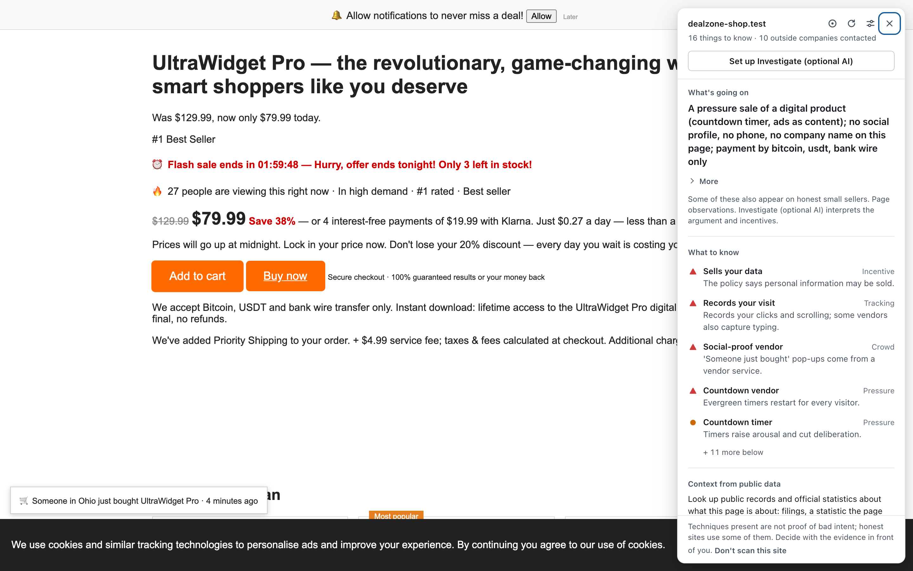
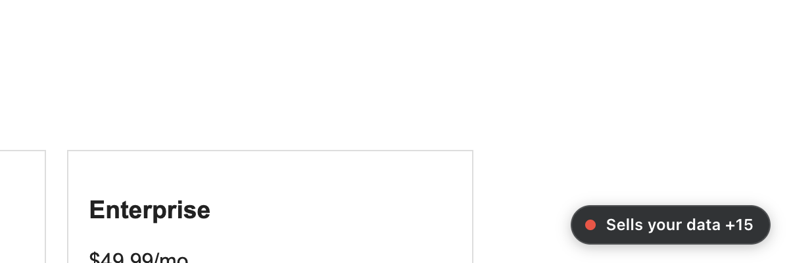
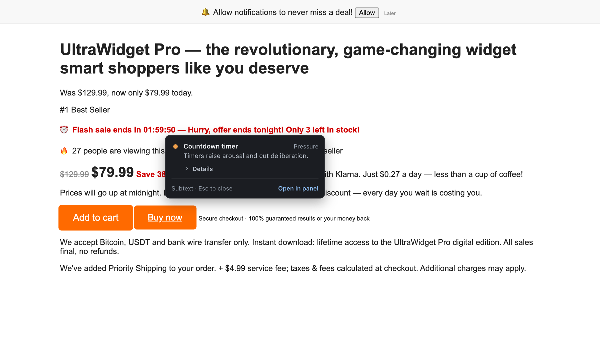
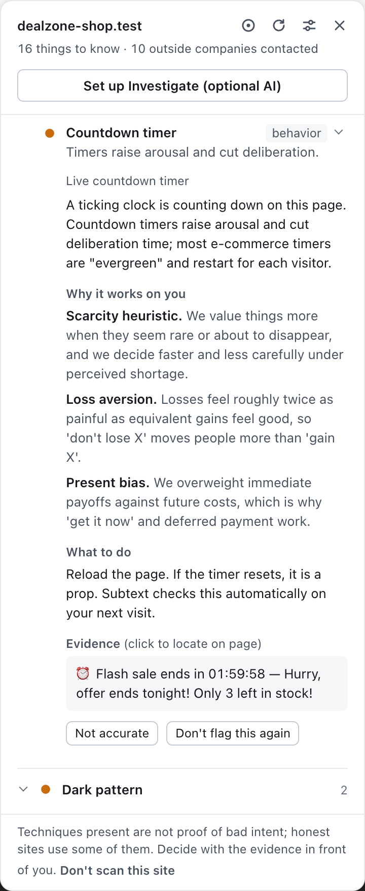
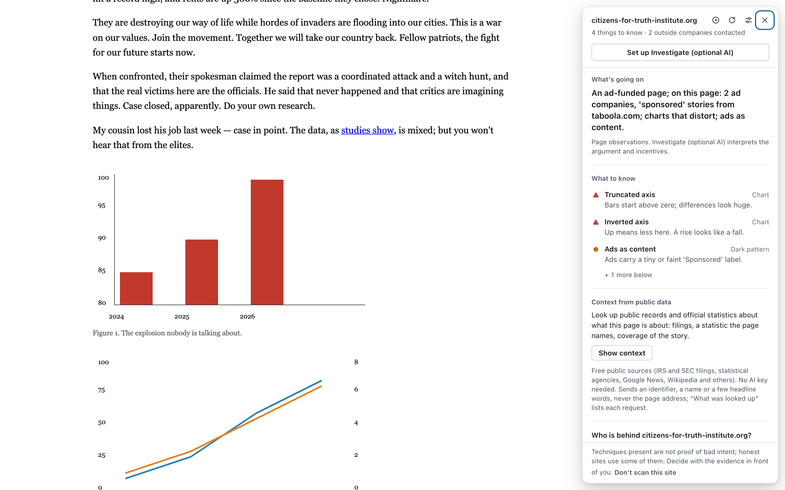
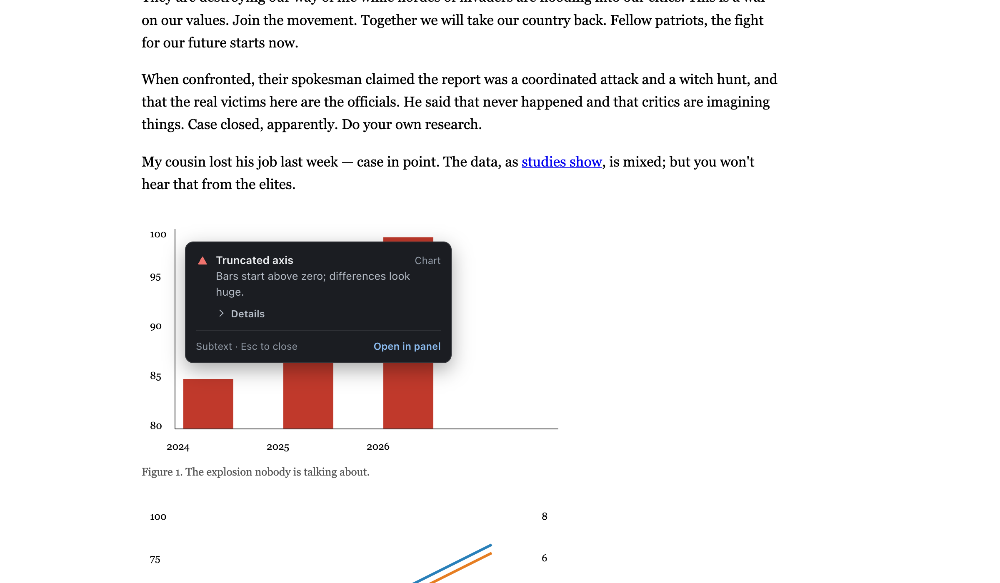
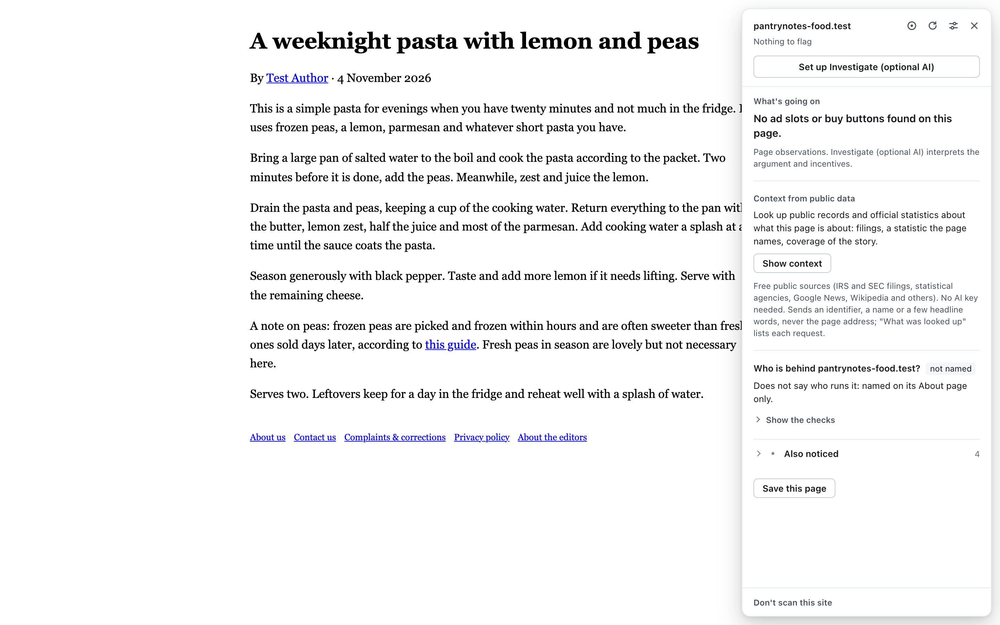

Subtext shows what a web page is doing to you, who is behind it, and what they get
Subtext is a browser extension that labels what it finds on each page: a countdown timer, a pre-checked box, a data-sale clause. Every label has a one-line reason, and the evidence is one click away.
Proof of concept, v0.2. Chrome, Edge, Brave, Arc.
Get the extension Read the source Link not published yet.

One example: a test shop page
dealzone-shop.test is not a real shop. It is a test page we built.
Pill: one flag by name
A small pill sits in the corner of the page. Here it reads "Sells your data +15". It names the flag Subtext ranks first and counts the others.

Hover: a label and a one-line reason
Rest the mouse on a flagged part of the page. This step follows another flag on the same page, the sale timer. The tooltip reads "Countdown timer", then "Timers raise arousal and cut deliberation."

Panel: explanation, mechanism, what to do, evidence
Click the pill to open the panel. The timer entry starts: "A ticking clock is counting down on this page." Under "Why it works on you" it describes scarcity, loss aversion and present bias.
Under "What to do" it says: "Reload the page." Under "Evidence (click to locate on page)" it quotes the page's own words.

Three questions Subtext answers on each page
What the page is doing to you
- Countdown timers, including a timer that restarts between visits.
- Boxes ticked for you, and cookie banners with no reject button.
- Charts whose bars start above zero.
Who is behind it
- The owner and funding of 134 known outlets, each with a public source.
- For other sites: whether the page shows a company name or an address.
- Whether a public warning list includes the site, and who listed it.
What they get if you comply
- How the site earns money: ads, subscriptions, sales commissions or data collection.
- Which outside companies the page contacts.
- Clauses in the privacy policy and terms, such as data sale or forced arbitration.
On a test article we built, the panel lists "Truncated axis". Its reason reads "Bars start above zero; differences look huge." The tooltip adds the measurement: "The y-axis starts at 80 instead of 0."


Limits Subtext keeps on what it says
- Subtext names a technique and shows evidence. It does not claim to know a site's motive.
- Techniques present are not proof of bad intent. Legitimate sites use urgency, social proof and emotional language too.
- There is no score, grade or rating. A page is not one number.
- A rule may flag only after checks on real pages. Of 86 text rules, one may flag today. Other flags come from page structure, behaviour, tracker and policy checks.
- The rules are heuristics and have false positives. Each finding has a "Don't flag this again" control.
Ordinary pages get a quiet report
On an ordinary test page, the panel reads "Nothing to flag". That means the rules found nothing, not that the page is cleared.

Privacy: what leaves your browser, and when
There is no Subtext server. Nothing is sent to this project. The rules run in your browser.
Some requests do leave your browser.
On every page by default
- The site's public ads.txt file, to see who sells its ad space.
- The site's own privacy and terms pages, when the page links them.
- On a shop page with no company name or phone: up to five of the site's contact and legal pages, its robots.txt and its sitemap.
These requests go to the site you are visiting, with no cookies and no referrer. The site can see them, and a redirect can lead to another host. Each one has an off switch in Settings.
Only when you click
- Compare: the public record identifier of a cited document goes to the SEC, Europe PMC or ClinicalTrials.gov.
- Show context: requests go to public sources such as Wikidata, Wikipedia and Google News. None carries the page address or its text.
- Show context also sends the subject's name to Google Trends with your Google cookies. That source is on by default, and Settings turns it off.
- Investigate: page excerpts go to the AI provider you chose, with your key. It can also read up to two public records and send search queries built from the page.
Only if you turn it on
- ToS;DR lookup: the site's hostname goes to api.tosdr.org.
- Domain registration lookup: the site's domain goes to the registry's RDAP server.
- Load context automatically: the Show context requests run on each page, without Google Trends.
Read the full list, request by request Link not published yet.
Why the extension asks to read every site
Subtext labels what is on a page, so it has to read the page. That reading happens in your browser. You can exclude any site in Settings, and an excluded site gets no scan and no requests.
Investigate: an optional AI reading with your own key
Investigate is off until you add an API key in Settings. You can choose Claude (Anthropic) or ChatGPT (OpenAI). ChatGPT support has not been verified yet.
It runs only when you press the button. With the default Claude model, one use costs about 11 cents, measured on 43 real pages. A background web search, when it runs, adds about 5 cents.
The provider receives the page title, headings, excerpts of the main text, and the facts Subtext has already found. Text printed on the page can contain personal information.
A second model pass reviews the reading. The result is still a model's reading, not a verified fact.
Status: an early proof of concept
Built
- Version 0.2 runs on Chrome, Edge, Brave and Arc, on Chrome 110 or newer.
Not built, or not done
- Safari and Firefox are not built or tested.
- There is no browser store listing.
- Results on real pages have been graded only by AI judges. No person has labelled them yet.
- The outlet dataset is a hand-kept seed. 25 of its 134 rows still need a second check.
- There is no address for corrections yet.
Install Subtext by hand in a Chromium browser
- Download the zip from download link, not published yet and unzip it, or clone repository link, not published yet.
- Open
chrome://extensions, oredge://extensionsin Edge, orbrave://extensionsin Brave. - Turn on Developer mode, at the top right.
- Click Load unpacked and choose the extension folder.
- Pin the icon, then visit any page.
Download v0.2 (zip) Link not published yet.
Open source: licences, method and how to contribute
The code is licensed AGPL-3.0-or-later. The rules, docs and outlet data are licensed CC BY-SA 4.0.
The bundled warning-list file carries its own licences, listed in extension/data/NOTICE-lists.md.
- Add a rule: add it to
extension/rules/text-rules.jsonwith a row indocs/TAXONOMY.mdand a test example. - Add an outlet: append a row to
extension/data/outlets.json, with a public source link.
The method and its limits are in docs/RELIABILITY.md, docs/CALIBRATION.md and docs/THREAT-MODEL.md.
Questions a careful visitor asks
Why does it need access to every site?
It must read a page to label it. That reading happens in your browser.
Does it block anything?
No. It adds a pill, a hover tooltip and a panel you open. Page content stays as it is.
Does it say a site is dishonest?
No. It names techniques and shows evidence. For a site on a public warning list, it says who listed the site and adds no verdict.
Is it politically one-sided?
The rules are written for techniques, not for political sides. A check that they fire at similar rates on left-leaning and right-leaning pages is planned, not done.
What does the AI part cost?
Nothing, unless you add your own key and press Investigate. Then one use costs about 11 cents, or about 16 cents with the background search.
Why is there no rating?
A page is not one number. Subtext names each technique instead.